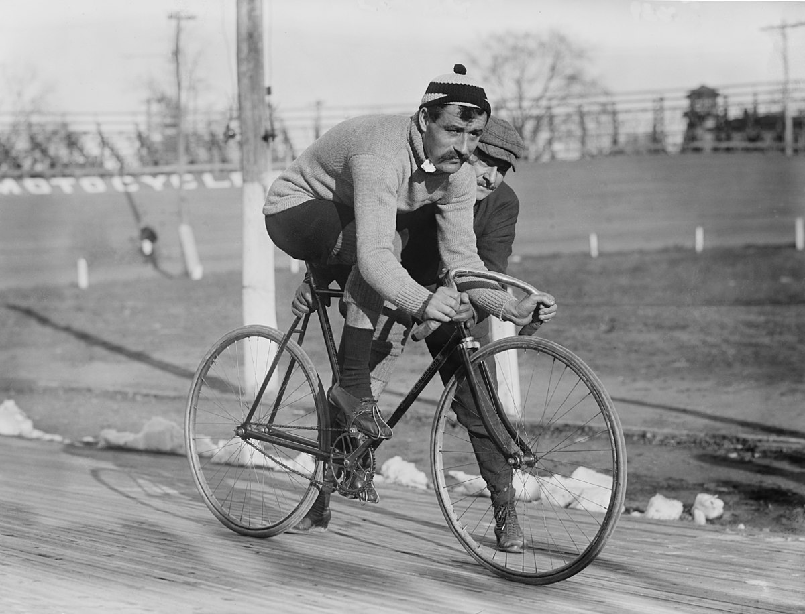

Видове колоездене
В тази статия ще научите за видовете колоездене, историята и правилата на всеки вид, състезания и видове дисциплини.
- Шосейно колоездене(Road cycling)
-Шосейното колоездене е най-разпространената форма на колоезденето.
- История-Шосейното колоездене е един от най-популярните видове колоездене и има дълга история. Ето основните етапи и интересни факти:
- Измисляне и ранни години: Шосейното колоездене има корени, които се проследяват още в началото на 19 век. Първите колела с педали бяха изобретени през 1817 г. от Карл Дрез, но идеята за организирано състезание възниква по-късно. През 1868 г. в Париж се провежда едно от първите организирани шосейни състезания, наречено "Велоципедична екскурзия".
- Развитие на състезанията: През 20-ти век шосейното колоездене става все по-популярно. През 1903 г. се провежда първото издание на "Тур дьо Франс", което дава началото на най-прочутия и престижен шосейен велосипеден обикол. Състезанието става символ на възможността за преодоляване на големи разстояния и предизвикателства.
- Технологични иновации: През годините шосейното колоездене претърпява значително развитие както по отношение на технологиите на велосипедите, така и на техниките за трениране и състезателна стратегия. Използването на леки материали като карбон и разработването на по-ефективни системи за скорости и спирачки са само някои от иновациите, които променят лицето на спорта.
- Глобално влияние: Шосейното колоездене става една от най-гледаните спортни събития по света. "Тур дьо Франс", "Гиро д'Италия" и "Вуелта а Испания" привличат милиони зрители от цял свят и са сред най-престижните и известни велосипедни обиколи.
- Правила-Шосейното колоездене има определени правила, които се отнасят както за състезанията, така и за облеклото на състезателите. Ето някои от основните правила и традиции:
- Общи правила за състезанията: Състезателите трябва да спазват правилата за безопасност, включително правилното държане на колоездачния шлем и спазване на правилата за движение по пътя.
Състезанията обикновено се провеждат на открити пътища, като се спазват правилата за движение на пътното движение.
- Цветове на облеклото: Жълтата фланелка се носи от лидера в общото класиране. Това е състезателят, който за най-малко време е изминал общата обиколка.
Зелената фланелка обикновено се дава на лидера в точковата класация, докато белият джърси се дава на лидера в класацията за младежи.


- Състезания-Някои от най-епичните и прочути състезания по шосейно колоездене включват:
- Тур дьо Франс: Тази обиколка е най-престижното и прочуто състезание в света на шосейното колоездене. Провежда се във Франция през 1903 г. и включва различни етапи през различни региони на страната. Турът се отличава с високата си ниво на конкуренция, красивите маршрути и невероятната атмосфера.
- Гиро д'Италия: Това е втората по престиж състезателена обиколка след Тур дьо Франс. Провежда се в Италия и е известена със своите красиви пейзажи и трудни планински етапи.
- Вуелта а Испания: Третата по големина обиколка в света на шосейното колоездене. Провежда се в Испания и също включва различни етапи, преминаващи през различни региони на страната.
- Най-дългата обиколка: Най-продължителното състезание в историята на шосейното колоездене е "Париж-Брюксел", което се e провело между 1893 и 1987 година. Това е еднодневно състезание, което било известно с дългата си дистанция от около 300 километра.

- Видове дисциплини-Шосейното колоездене включва различни видове дисциплини и състезания, които тестват различни аспекти на велосипедния спорт. Ето някои от основните дисциплини в шосейното колоездене:
- Етапни обиколи: Това са състезания, които се провеждат през няколко последователни дни и обикновено включват различни типове етапи, като планински етапи, плоски етапи и индивидуални времеви изпитания. Примери за такива обиколи включват "Тур дьо Франс", "Гиро д'Италия" и "Вуелта а Испания".
- Класически състезания: Това са еднодневни състезания, които обикновено се провеждат на специално избрани маршрути и често имат историческо значение. Някои от най-известните класически състезания включват "Милано-Санремо", "Тур на Фландрия", "Париж-Рубе" и "Лиеж-Бастион-Лиеж"
- Индивидуални времеви изпитания: Това е дисциплина, при която състезателите стартират един по един и се опитват да изминат даден маршрут възможно най-бързо. Тази дисциплина е обикновено част от етапни обиколки, но също така може да се провежда и като самостоятелно състезание.
- Планински етапи: Това са етапи на обиколки, които преминават през планински райони и обикновено включват няколко планински възвишения или превъзходи. Те са често решаващи за общото класиране в обиколките.
- Спринтове: Някои етапи в обиколките включват специални зони, наречени спринтове, където състезателите могат да спечелят допълнителни точки или бонуси, като преминат първи през определена точка на маршрута.
2. Пистово колоездене(Track cycling) -Пистовото колоездене е спортна дисциплина, която се провежда на закрити колодроми със специално изградени писти.
- История
- Възникването: Историята на пистовото колоездене е богата и се проследява до края на 19-ти век. През 1870 година във Великобритания се провеждат първите състезания на закрит велодром. Състезанията на писта бързо стават популярни в Европа и Северна Америка през 20-ти век.
- Изобретатели: Пистовото колоездене не може да се свърже с един конкретен изобретател. То е резултат от еволюцията на колоезденето като цяло. Идеята за състезания на закрит велодром вероятно се е появила едновременно в различни части на света, като реакция на нарастващия интерес към колоезденето.
- Развитие: Пистовото колоездене е претърпяло значително развитие през годините. То включва различни дисциплини като спринт, кейринг, мас старт (както елитният така и масовите състезания), тандеми и много други. Технологичният напредък също играе важна роля в развитието на състезанията, като например появата на специализирана велоекипировка и велосипеди, оптимизирани за пистови условия.

- Правила
- Писта и Оборудване: Пистата е обикновено овална и се състои от двете страни: вътрешна линия (меридиан) и външна линия (кота).
Велодромът трябва да бъде изграден в съответствие със специфичните международни стандарти.
Всички участници трябва да се състезават с велосипеди, които са одобрени от съответните организации за велосипеден спорт и отговарят на определени технически изисквания.
- Състезания: Велодромните състезания могат да включват различни дисциплини като спринт, кейринг, масов старт (както велошосе), тандеми и дрифт.
В състезанията участват различни категории спортисти в зависимост от възрастта, пола и опита им.
- Правила по време на състезания: За времето на старта в състезанията се използва стартерска пистолета или звуков сигнал.
В състезанията като спринт и кейринг има определени стратегии и тактики, свързани с позиционирането и използването на драфтинг.
- Правила за дисквалификация: Неспазването на правилата, агресивно поведение или нечестни практики могат да доведат до дисквалификация на участника от състезанието.
Има и други правила за дисквалификация, като например прекомерно изпълнение на махове в спринтови дисциплини или неправилно позициониране в кейринг.
- Състезания-Състезанията в пистовото колоездене обхващат различни дисциплини и формати на състезания, които се провеждат на специално изградени велодроми. Ето някои от най-популярните състезателни дисциплини::
- Спринт: В спринта състезателите стартират един след друг и се опитват да преодолеят определена дистанция (обикновено 200 метра или 250 метра) възможно най-бързо. Това е обикновено индивидуално състезание, като победителят е този, който пресече финалната линия първи.
- Кейринг: В кейринг състезателите следват моторизирано превозно средство (обикновено мотор или моторизиран велосипед), наречено дерней, което ускорява и задържа определена скорост. Следващите състезатели се нареждат един зад друг и използват драфтинг (използване на вълнови налягания) да се задържат в позиция. На последните няколко обиколки дерней спряга и състезателите се състезават за победата.
- Масов старт: В масовия старт на велодрома се провеждат състезания, при които група от състезатели стартират заедно и се състезават за победа върху определена дистанция. Това може да бъде една голяма масова гонка или спринтове в рамките на състезанието.
- Тандеми: Тандемите са състезания, в които двама състезатели се състезават на един велосипед (тандем). Този вид състезания обикновено са екипни и изискват добро сътрудничество и синхронизация между двамата състезатели.

- Видове дисциплини-Пистовото колоездене включва разнообразие от дисциплини, които тестват различни умения и способности на колоездачите. Ето някои от основните видове дисциплини в пистовото колоездене:
- Спринт: Индивидуален спринт: Колоездачите стартират от стоящ старт и се състезават за победа върху кратка дистанция, обикновено 200 или 250 метра.
Екипен спринт: Отбори от колоездачи стартират заедно и се състезават, като се опитват да пресекат финалната линия възможно най-бързо. Победител е отборът, който пресече финалната линия първи.
- Дрифт:В дрифта, колоездачите се състезават да контролират задното си колело да се хвърля (дрифтува) на завои. Това е състезание за умения и контрол, а не толкова за скорост.
- Тандеми: В тандемите, двама колоездачи се състезават на един велосипед (тандем). Този вид състезание изисква добро сътрудничество и синхронизация между двамата колоездачи.
- Масов старт:В тандемите, двама колоездачи се състезават на един велосипед (тандем). Този вид състезание изисква добро сътрудничество и синхронизация между двамата колоездачи.